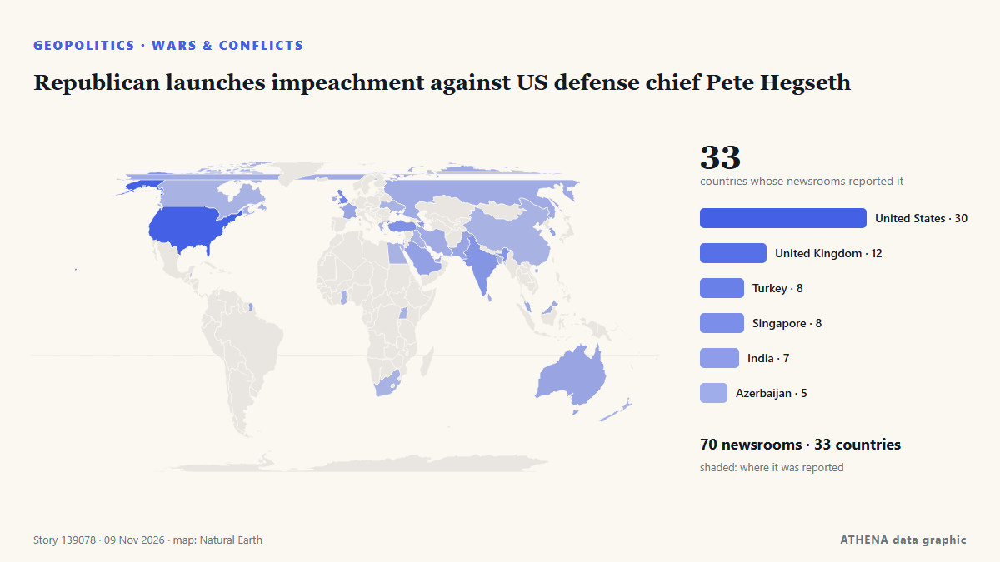

ATHENA Glaux Intelligence — Veille mondiale de l'information — chaque chiffre expliqué
Chaque titre, vérifié dans plusieurs pays.
ATHENA Glaux suit 632 médias dans le monde. Une information devient un événement vérifié seulement lorsque des médias indépendants la rapportent. Chaque événement indique qui l'a publiée en premier et un score de risque avec ses raisons.
Des articles arrivent de médias indépendants : quand deux se rejoignent sur la même histoire, un événement vérifié naît.
Trois façons de lire aujourd'hui
Commencez par celle qui convient à votre tempsÉvénements vérifiés
Classés selon l'ampleur de la couverture
- After JD Vance, now Trump Jr blames Iran war for US midterms defeat83 médias · 39 paysRisque 7.1
- Risque 6.9
- Poland calls Krakow shooting rampage 'terrorist' attack56 médias · 35 paysRisque 7.5
- Explosions heard on Iran's Qeshm Island, state media reports67 médias · 34 paysRisque 6.1
- Paraguay’s former president charged after bank collapse50 médias · 32 paysRisque 7.3
Bureau d'analyse
Posez une question et lisez une évaluation argumentée d'un sujet majeur, avec ce qui la démentirait.
Ouvrir le Bureau d'analyse ›Comment ATHENA vérifie une information
- CollecterLes reportages arrivent de médias indépendants dans de nombreux pays.
- CroiserQuand deux médias se rejoignent sur la même information, elle devient un événement vérifié.
- ExpliquerChaque événement montre qui était le premier, jusqu'où il s'est propagé et pourquoi le risque est ce qu'il est.

GéopolitiqueRepublican launches impeachment against US defense chief Pete Hegseth
The 15 Minute City model calls for walkable, bike-able access to basic services and resources, a concept that has been embraced by none other than the US Department of Defense. de CleanTechnica
Les titres sont affichés en anglais, tels que publiés.
Explosions heard on Iran's Qeshm Island, state media reports
TEHRAN, Nov 3: Several explosions were heard from the direction of the sea near Iran's southern port city of Bandar Lengeh on Monday, according to the IRGC-affiliated Fars news age... de Arab Times
After JD Vance, now Trump Jr blames Iran war for US midterms defeat
Says war in Iran had weighed on Republican candidates, even as voters backed his handling of it. de Express Tribune

Trump says 'great dislike' for Israel contributed to Republican rout in midterms
El-Sayed urges distinction between Judaism and Israel, rejecting claims that criticism of Israel is antisemitism. de Express Tribune
Riyadh financial district targeted, Aramco skyscraper damaged
An Aramco building in Riyadh was targeted in an "attempted attack", the Saudi energy ministry said on Sunday, with eyewitnesses telling AFP the skyscraper sustained damage, after the Saudi-led… de Al-Monitor
Hardline Trump aide Stephen Miller takes over as White House chief of staff
The architect of the Trump administration’s brutal crackdowns on immigration and dissent was already known as “the prime minister.” Now he’ll work as the chief of staff. de Wired
Géopolitique, politique et sécurité
Plus ›Trump admits US deportation policy may have been too tough
WASHINGTON: US President Donald Trump said that his mass deportation of undocumented immigrants was “too tough,” according to an excerpt of an interview with CBS aired Sunday. de New Straits Times
- Élections et politique
Trump questions midterm elections integrity after previously accepting results
- Diplomatie et sommets
Europeans to join Ukraine peace talks in Abu Dhabi: Berlin
- Guerres et conflits
Four killed in Gaza after sand embankment collapses onto tents
- Guerres et conflits
Production Suspended at Iraq’s Khor Mor Gas Field After Drone Attack
Économie, finance et marchés
Plus ›Brazil Interest Rate Cuts Stall on US Yields
Brazil's central bank has cut five times this year, but higher US rates and 4.58% inflation shrink its room. de The Rio Times
- Emploi et salaires
Pope Leo Mass in Buenos Aires draws record crowd of 2.5 million, Vatican says
- Dette et budgets
German chancellor warns he will block EU budget unless all member states agree to fund Ukraine
- Crypto et actifs numériques
Binance’s CFO Leaves Company in Wake of $6 Billion Crypto Heist
- Crypto et actifs numériques
Meta’s Muse Ember matches Claude Haiku at a third of the cost per task
Commerce, industrie et infrastructures
Plus ›Turkey steel factory blast kills at least 17 people
Eyewitnesses say the explosion shook the ground, with one believing an earthquake had hit near the Habas Demir Celik plant in Aliaga. de BBC News
- Droits de douane et contrôles
China extends suspensions of 24% tariff on US goods, port fees on US ships for two months
- Aérien, rail et route
Peru airport thwarts plot to smuggle 3,000 tarantulas in dirty socks
- Aérien, rail et route
Top Vietnamese leader attends ceremony marking 10 years of Vietnam Airlines-ANA Holdings strategic cooperation
- Industrie manufacturière
Honda will spend $3B on a new Ohio car plant built around hybrids
Énergie, ressources et environnement
Plus ›Oil steadies after Trump signals restraint on Iran, Hormuz risks persist
NEW DELHI/PERTH: Oil prices were steady on Monday after US President Donald Trump downplayed the likelihood of new strikes on Iran, though attacks on ships near the Strait of Hormuz kept supply… de Arab News
- Climat et politique climatique
COP31 opens with leaders under pressure to tackle climate crisis
- Météo extrême et catastrophes
Trump's 'Board of Peace' says Israel too slow as floods ravage Gaza
- Pollution et biodiversité
Dense fog expected overnight as yellow warning issued
- Pollution et biodiversité
Thick smog shrouds New Delhi after Diwali firecrackers add to seasonal pollution
Technologie, IA et cybersécurité
Plus ›Royal Navy launches first autonomous squadron of uncrewed vessels
Royal Navy launches first autonomous squadron at Portsmouth, deploying uncrewed boats for frontline surveillance, reconnaissance and force protection operations. de The Herald (Scotland)
- Cybersécurité
French officials blame Iran for refrigerator hacks, vow retaliation
- Cybersécurité
France accuses Iran of cyberattack on supermarket fridges
- Puces et calcul
Who is Lori Huang, Nvidia CEO Jensen Huang’s wife of over 40 years
- Puces et calcul
Nvidia's shares slide as chip giant probes CEO Jensen Huang over spy claims
Entreprises et investissement
Plus ›Jensen Huang Falls Two Spots In Billionaire Rankings As Nvidia Investigates His Affair With Alleged Chinese Spy
President Donald Trump was briefed about a year ago about those intelligence findings, The New York Times reported. de CNBC World
- Stratégie d'entreprise
Stellantis signs deal to sell Brampton, Ont., assembly plant to Canadian armoured vehicle maker
- Stratégie d'entreprise
Apple is racing to make Siri more agentic
- Faillites et restructurations
Majority accuses Akufo-Addo administration of creating the conditions for passport racketeering.
- Stratégie d'entreprise
Nvidia in turmoil as China denies spying claims
Aujourd'hui en chiffres
| 22:00 | 311 |
|---|---|
| 23:00 | 340 |
| 00:00 | 298 |
| 01:00 | 321 |
| 02:00 | 317 |
| 03:00 | 379 |
| 04:00 | 530 |
| 05:00 | 548 |
| 06:00 | 646 |
| 07:00 | 52 |
| 08:00 | 300 |
| 09:00 | 537 |
| 10:00 | 1323 |
| 11:00 | 980 |
| 12:00 | 693 |
| 13:00 | 719 |
| 14:00 | 817 |
| 15:00 | 948 |
| 16:00 | 990 |
| 17:00 | 385 |
| 18:00 | 336 |
| 19:00 | 385 |
| 20:00 | 525 |
| 21:00 | 304 |
Risque des événements du jour
Les plus couverts
Signaux émergents
- Hausse soudaine · ActifJensen Huang
- Hausse soudaine · ActifNvidia
- Hausse soudaine · ActifMinutes
- Hausse soudaine · ActifCrete
- Hausse soudaine · ActifIntelligence and espionage
Alertes officielles
- M 6.1 - Fiji regionM6.1 · USGS ·
- Cyber chief: UK facing AI-powered attacks on critical infrastructure within two yearsadvisory · UK National Cyber Security Centre ·
ATHENA sur Telegram
Rejoignez gratuitement le groupe ATHENA Glaux et recevez l'actualité dès sa publication ici :
- les événements urgents de risque 6 ou plus
- un point horaire des principaux événements
- les mises à jour des suivis de risque
- le briefing quotidien chaque matin à 10 h (heure d'Athènes)
- une perspective hebdomadaire
- avertissements officiels, signaux émergents et risques en hausse
Touchez le bouton, Telegram s'ouvre, appuyez sur Rejoindre. Les messages sont en anglais ; vous pouvez couper le son ou partir à tout moment. Pas encore Telegram ? Gratuit sur telegram.org.
Suivi des risques
Plus ›Risques mondiaux — semaine 46, 2026 (9–15 nov.) ›